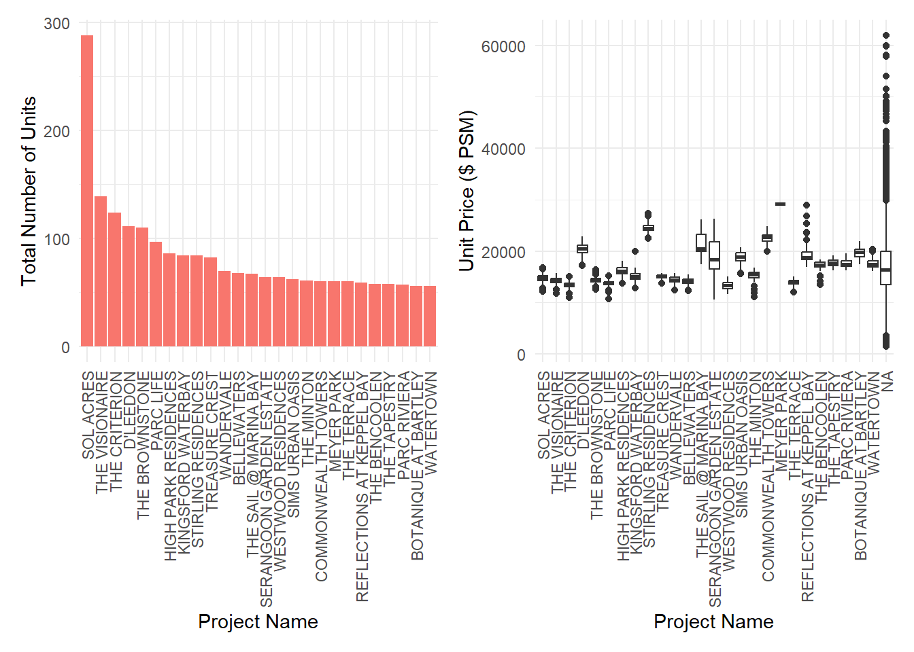
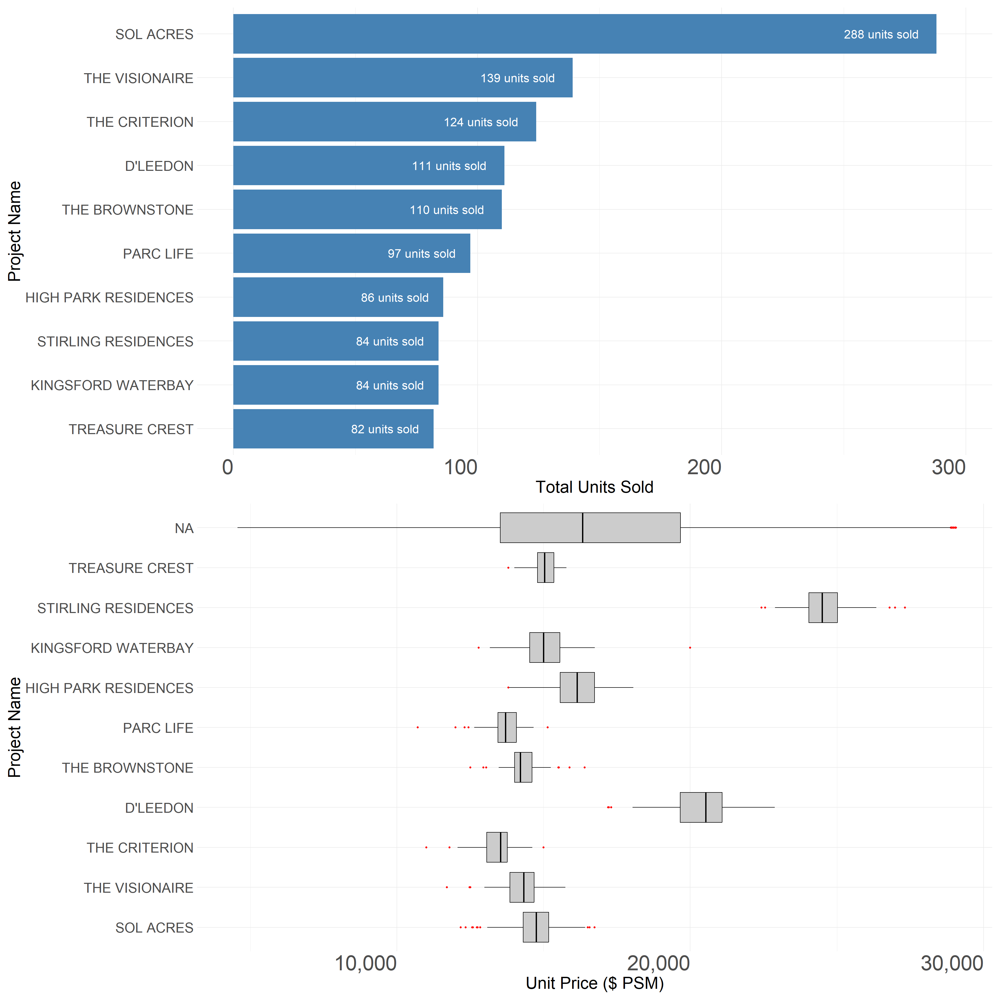

pacman::p_load(tidyverse, lubridate, patchwork, scales, zoo)Take-home Exercise 2
Overview
The Task
For Take-home Exercise 2, I need to choose a data visualisation prepared by one of my classmate’s Take-home Exercise 1 submission, critique its clarity and aesthetics, and then redesign it using the ggplot2 and tidyverse packages, including ggplot2 extensions.
Getting Started
Reproducing The Original Process
I will follow the step-by-step process performed by my classmate in order to reproduce the original visualisation.
Loading The Packages
First of all, let’s load all the required packages to reproduce the visualisation. The packages used are listed below:
| Library | Description |
|---|---|
| pacman | Pacman is a package that makes it possible to perform tasks associated with add-on packages in a more convenient manner. It checks whether the add-on packages are installed or not. If not, it will automatically install and load them into the R environment. |
| tidyverse | A collection of core packages designed for data science, used extensively for data preparation and wrangling. Content includes: ggplot2, dplyr, tidyr, readr, purr, tibble, stringr, forcats, scales, lubridate, etc. |
| patchwork | This one is also an extension package for ggplot2 that allows combining multiple ggplot2 plots into one (composite figure) and arranging them in various layouts. Even though patchwork complements the functionality of ggplot2, it is independently maintained and must be installed and loaded separately. |
| scales | This package is designed to enhance how data is presented in visualisation, particularly in ggplot2 plots. It provides tools for mapping data to aesthetic attributes like colours, shapes, and sizes more effectively. It also includes functions for formatting and transforming axes and legends in a chart. Even though this is part of the tidyverse package collection, it needs to be installed and loaded separately. |
| zoo | Provides powerful methods for managing and manipulating ordered indexed data, particularly time series data, making it easier to handle a variety of data irregularities. |
These packages will be loaded using the p_load() function from the pacman package to ensure that all the necessary packages are available in the R environment.
Loading The Data
The Datasets
There are five datasets in the form of CSV files used to produce the original visualisation. These datasets cover from the start of the 1st quarter 2023 to the end of the 1st quarter 2024.
read_csv() function will be used to load these CSV files into the R environment to create five separate dataframes: data1, data2, data3, data4, and data5.
bind_rows() from the dplyr package merges these five data frames into one large data frame called data.
glimpse() provides a quick overview of the combined data frame.
data1 = read_csv("data/ResidentialTransaction20240308160536.csv")
data2 = read_csv("data/ResidentialTransaction20240308160736.csv")
data3 = read_csv("data/ResidentialTransaction20240308161009.csv")
data4 = read_csv("data/ResidentialTransaction20240308161109.csv")
data5 = read_csv("data/ResidentialTransaction20240414220633.csv")
data <- bind_rows(data1, data2, data3, data4, data5)
glimpse(data)Rows: 26,806
Columns: 21
$ `Project Name` <chr> "THE REEF AT KING'S DOCK", "URBAN TREASU…
$ `Transacted Price ($)` <dbl> 2317000, 1823500, 1421112, 1258112, 1280…
$ `Area (SQFT)` <dbl> 882.65, 882.65, 1076.40, 1033.34, 871.88…
$ `Unit Price ($ PSF)` <dbl> 2625, 2066, 1320, 1218, 1468, 1767, 1095…
$ `Sale Date` <chr> "01 Jan 2023", "02 Jan 2023", "02 Jan 20…
$ Address <chr> "12 HARBOURFRONT AVENUE #05-32", "205 JA…
$ `Type of Sale` <chr> "New Sale", "New Sale", "New Sale", "New…
$ `Type of Area` <chr> "Strata", "Strata", "Strata", "Strata", …
$ `Area (SQM)` <dbl> 82.0, 82.0, 100.0, 96.0, 81.0, 308.7, 42…
$ `Unit Price ($ PSM)` <dbl> 28256, 22238, 14211, 13105, 15802, 19015…
$ `Nett Price($)` <chr> "-", "-", "-", "-", "-", "-", "-", "-", …
$ `Property Type` <chr> "Condominium", "Condominium", "Executive…
$ `Number of Units` <dbl> 1, 1, 1, 1, 1, 1, 1, 1, 1, 1, 1, 1, 1, 1…
$ Tenure <chr> "99 yrs from 12/01/2021", "Freehold", "9…
$ `Completion Date` <chr> "Uncompleted", "Uncompleted", "Uncomplet…
$ `Purchaser Address Indicator` <chr> "HDB", "Private", "HDB", "HDB", "HDB", "…
$ `Postal Code` <chr> "097996", "419535", "269343", "269294", …
$ `Postal District` <chr> "04", "14", "27", "27", "28", "19", "10"…
$ `Postal Sector` <chr> "09", "41", "26", "26", "79", "54", "27"…
$ `Planning Region` <chr> "Central Region", "East Region", "North …
$ `Planning Area` <chr> "Bukit Merah", "Bedok", "Yishun", "Yishu…Variable Selection
| Category | Description |
|---|---|
| Project Name | the name of the property or title of the development project that is being sold |
| Sale Date | The specific date when the transaction was completed |
| Type of Sale | A new sale, resale, or auction, among other types.Here mainly analyze resale |
| Area (SQM) | The usable floor area of the property in square meters |
| Unit Price ($ PSM) | The price per square meter of the property |
Data Cleaning
Sale Date is converted to a date format using the dmy() function from the lubridate package, which interprets strings as dates in “day-month-year” format.
Area (SQM) is transformed into a numeric variable.
Unit Price ($ PSM) undergoes a similar process as Area (SQM).
Any NA (missing) values in Area (SQM) is replaced with 0
A new variable Area_Category is created using the cut() function to categorize the Area (SQM). variable into predefined bins: <100, 100-200, 200-300, 300-400, >400.
The breaks argument specifies the boundaries for these bins, and labels provides the corresponding category labels.
include.lowest = TRUE ensures that values equal to the lowest break point (0) are included in the first category (<100).
data_cleaned <- data %>%
mutate(
`Sale Date` = dmy(`Sale Date`), # Ensuring we're using the exact column name from the dataset
`Area (SQM)` = as.numeric(gsub(",", "", `Area (SQM)`)), # Keeping the variable names as they are in the dataset
`Unit Price ($ PSM)` = as.numeric(gsub("\\$", "", gsub(",", "", `Unit Price ($ PSM)`))) # Properly referencing the variable
)
data_cleaned <- data_cleaned %>%
mutate(
`Area (SQM)` = ifelse(is.na(`Area (SQM)`), 0, `Area (SQM)`) # Dealing with NA values
)
data_cleaned <- data_cleaned %>%
mutate(
Area_Category = cut(
`Area (SQM)`,
breaks = c(0, 100, 200, 300, 400, Inf),
labels = c("<100", "100-200", "200-300", "300-400", ">400"),
include.lowest = TRUE
)
)Reproducing The Original Visualization
The plot below shows the original design of the “Comparative Analysis of Transaction Volumes and Pricing Across Real Estate Projects”.
Access the original design from this link.

resale_data <- data_cleaned %>%
filter(`Type of Sale` == "Resale")
project_stats <- resale_data %>%
filter(`Project Name` != "N.A.") %>%
group_by(`Project Name`) %>%
summarise(
Total_Units = sum(`Number of Units`, na.rm = TRUE), # Sum up all units for each project
Avg_Unit_Price = mean(`Unit Price ($ PSM)`, na.rm = TRUE), # Calculate the average price per square meter
.groups = "drop" # Drop the grouping
)
top_projects <- project_stats %>%
top_n(25, Total_Units) %>%
arrange(desc(Total_Units))
project_order <- top_projects$`Project Name`
top_projects$`Project Name` <- factor(top_projects$`Project Name`, levels = project_order)
resale_data$`Project Name` <- factor(resale_data$`Project Name`, levels = project_order)
p_units <- ggplot(top_projects, aes(x = `Project Name`, y = Total_Units, fill = 'steelblue')) +
geom_bar(stat = "identity") +
labs(y = "Total Number of Units") +
theme_minimal() +
theme(
axis.text.x = element_text(angle = 90, hjust = 1, vjust = 0.5),
legend.position = "none"
)
p_price <- ggplot(resale_data, aes(x = `Project Name`, y = `Unit Price ($ PSM)`)) +
geom_boxplot() +
labs(y = "Unit Price ($ PSM)") +
theme_minimal() +
theme(
axis.text.x = element_text(angle = 90, hjust = 1, vjust = 0.5),
legend.position = "none"
)
p_combined <- p_units | p_price
p_combinedDataVis Makeover
Analysis of the Original Visualisation and Its Intended Purpose:
Project Name:
Goal: To provide a detailed understanding of the popularity and demand for specific developments, and how property developers’ reputation, location desirability, and unique features of projects might influence prices.
Visualization: Both plots are labeled with “Project Name” on the x-axis, allowing for the identification and comparison of specific housing projects. This enables stakeholders to discern which projects are more popular or command higher prices, potentially reflecting the reputation or desirability of the developers and locations involved.
Total Units:
Goal: To assess the scale of a project and its market absorption rate, with high sales volumes indicating high demand or effective pricing strategies, while low volumes may signal overpricing or less desirable attributes.
Visualization: The bar chart presents the total number of units sold per project. The descending order of bars (left to right) conveys which projects have the highest sales, which could be due to higher popularity or more effective market strategies. Projects with few units sold appear toward the right, highlighting potential issues or lower demand.
Avg Unit Price PSM:
Goal: To provide a comparative value indicator that normalizes prices across different sizes and types of properties, reflecting the price at which the market clears. This helps in understanding if there’s a relationship between the number of units sold and the price points.
Visualization: The box plot displays the distribution of unit prices per square meter for each project. This format shows the median, variability, and outliers in pricing within each project. It helps stakeholders see not just the average price but also how wide the price range is within each project, which can indicate a variety of unit types or varying desirabilities within a single project.
How the Original Visualisation Achieves the Analytical Goals:
Comparative Analysis: By placing both plots side by side, viewers can compare the total number of units sold to the price distributions of those same projects. For example, a project with many units sold but lower price variability might suggest a well-received project priced effectively for its target market.
Market Insights: Stakeholders can use this visual data to determine if projects with higher unit sales generally also command higher prices, or if prices are more competitive or lower despite high sales volumes, thus influencing future development and pricing strategies.
Developer Strategy: Seeing which projects command higher prices and also have high sales can guide developers in mimicking successful features in future projects. Conversely, projects with low sales and low prices might indicate areas needing improvement or reevaluation of market fit.
Critique on Clarity and Aesthetics of the Original Visualisation
Overall, the original visualisation aligns with the analytical goals by allowing for a detailed examination of both sales volume and pricing across projects, offering insights that can guide strategic decisions in real estate development. With that being said, there is still room for improvements, and some modifications would be beneficial to enhance its clarity and aesthetics.
Clarity
Label Overcrowding:
- The project names on the x-axis are densely packed, making them hard to read. This affects the viewer’s ability to quickly identify and compare projects.
Scale and Balance:
- The scale of the bar chart and box plot do not align well.
Data Visibility:
- In the box plot, some boxes and whiskers are thin or compressed due to the wide range of data, which can make it difficult to discern differences between the median and quartile values across projects.
Aesthetics
Color and Design:
- Both plots use a simple, minimalistic color scheme which, while clean, could be enhanced to differentiate data points or groups more effectively. For example, different colors could be used to represent different quartiles in the box plot or to highlight projects with particularly high or low metrics in both plots.
Consistency in Style:
- There is a visual inconsistency between the bar chart and the box plot that could be distracting. The bar chart is filled with a solid color, while the box plot is more traditional with outlines. Harmonizing these styles could improve the overall cohesion of the visualization.
Utilization of Space:
- There’s significant empty space at the right end of both plots, especially noticeable in the box plot. This could be better utilized by compressing the x-axis or by providing additional contextual information or annotations.
Recommendations for Improvement
Improving Label Readability:
Rotate the position of the plot to a horizontal layout.
Reducing the number of projects with the highest ‘Total_Units’ sold from top 25 to just top 10.
Additional annotations could help to convey key information better for the viewer.
Boxplot may benefit from incorporating median price directly on the plot
Upsizing the labels on the y-axis and the x-axis
Repositioning the two plots from side-by-side to top-bottom alignment.
Adjusting Scales and Ranges:
Adjust the y-axis on the box plot to focus more closely on the interquartile range, possibly using a secondary axis or break in the axis to handle outliers.
Labels and ticks on the axes should be more readable, and using formatted numbers (like millions or rounding off) can help in understanding the scales at a glance without overwhelming with too many digits.
Enhanced Color Coding and Visibility:
Use color more strategically to highlight differences in data, such as coloring bars or boxes based on performance tiers (e.g., high, medium, low sales volume or prices).
Apply consistent thematic styling across both plots to enhance the visual narrative.
The use of a single color, while minimalist, could be expanded to differentiate data further. Using a palette to distinguish between different quartiles or highlighting specific noteworthy data points could make the visual more engaging.
Use different colours to denote different metrics like median, mean, or outliers in box plots.

resale_data <- data_cleaned %>%
filter(`Type of Sale` == "Resale")
project_stats <- resale_data %>%
filter(`Project Name` != "N.A.") %>%
group_by(`Project Name`) %>%
summarise(
Total_Units = sum(`Number of Units`, na.rm = TRUE), # Sum up all units for each project
Avg_Unit_Price = mean(`Unit Price ($ PSM)`, na.rm = TRUE), # Calculate the average price per square meter
.groups = "drop" # Drop the grouping
)
top_projects <- project_stats %>%
top_n(10, Total_Units) %>%
arrange(desc(Total_Units))
project_order <- top_projects$`Project Name`
top_projects$`Project Name` <- factor(top_projects$`Project Name`, levels = project_order)
resale_data$`Project Name` <- factor(resale_data$`Project Name`, levels = project_order)
p_units <- ggplot(top_projects, aes(x = reorder(`Project Name`, Total_Units), y = Total_Units)) +
geom_bar(stat = "identity", fill = 'steelblue') +
geom_text(aes(label = paste(Total_Units, "units sold")), position = position_nudge(y = 8), hjust = 1.5, color = "white", size = 6) + # Add annotations with "units sold"
coord_flip() + # Flips the axes to make the bar chart horizontal
labs(x = "Project Name", y = "Total Units Sold") + # Change axis labels and update names
theme_minimal() +
theme(
axis.text.y = element_text(angle = 0, hjust = 1, size = 20), # Enlarge y-axis labels
axis.text.x = element_text(angle = 0, hjust = 1, size = 30), # Enlarge x-axis labels
axis.title.x = element_text(size = 24), # Enlarge x-axis title
axis.title.y = element_text(size = 24), # Enlarge y-axis title
legend.position = "none",
)
p_price <- ggplot(resale_data, aes(x = `Project Name`, y = `Unit Price ($ PSM)`)) +
geom_boxplot() +
labs(y = "Unit Price ($ PSM)") +
theme_minimal() +
theme(
axis.text.x = element_text(angle = 90, hjust = 1, vjust = 0.5),
legend.position = "none"
)
# Calculate the interquartile range to adjust y-axis limits more appropriately
iqr <- IQR(resale_data$`Unit Price ($ PSM)`, na.rm = TRUE)
q1 <- quantile(resale_data$`Unit Price ($ PSM)`, 0.25, na.rm = TRUE)
q3 <- quantile(resale_data$`Unit Price ($ PSM)`, 0.75, na.rm = TRUE)
lower_bound <- max(0, q1 - 1.5 * iqr)
upper_bound <- q3 + 1.5 * iqr
# Generate the boxplot with refined axis focus and number formatting
p_price <- ggplot(resale_data, aes(x = `Project Name`, y = `Unit Price ($ PSM)`)) +
geom_boxplot(fill = "grey80", colour = "black", outlier.colour = "red", outlier.shape = 16, outlier.size = 1) +
coord_flip() + # Flip the axes for horizontal layout
scale_y_continuous(limits = c(lower_bound, upper_bound), labels = scales::comma) + # Apply comma for thousands
labs(x = "Project Name", y = "Unit Price ($ PSM)") +
theme_minimal() +
theme(
axis.text.y = element_text(angle = 0, hjust = 1, size = 20), # Enhance readability of the x-axis labels
axis.text.x = element_text(angle = 0, hjust = 1, size = 30), # Enhance readability of the y-axis labels
axis.title.x = element_text(size = 24), # Enlarge x-axis title
axis.title.y = element_text(size = 24), # Enlarge y-axis title
legend.position = "none",
)
p_combined <- p_units / p_price # Change | to / to stack plots vertically
p_combinedLearning Takeaways
Improving these visualisations has helped me better understand the importance of clarity and precision in data presentation. Through this process, I have improved my ability to manipulate graphical properties in ggplot2, thereby enhancing readability and conveying information more effectively. Adjusting elements such as bar width, text annotations, and axis labels not only makes the visualisation more aesthetically pleasing but also more intuitive and informative for the audience. By customising text sizes, adjusting plot dimensions, and fine-tuning the placement of text annotations, I have observed how minor changes can significantly impact the viewer’s ability to quickly understand and interpret data. This experience has deepened my understanding of the crucial role of thoughtful visualisation design in data science, where the goal is not merely to present data but to tell a compelling story with it.